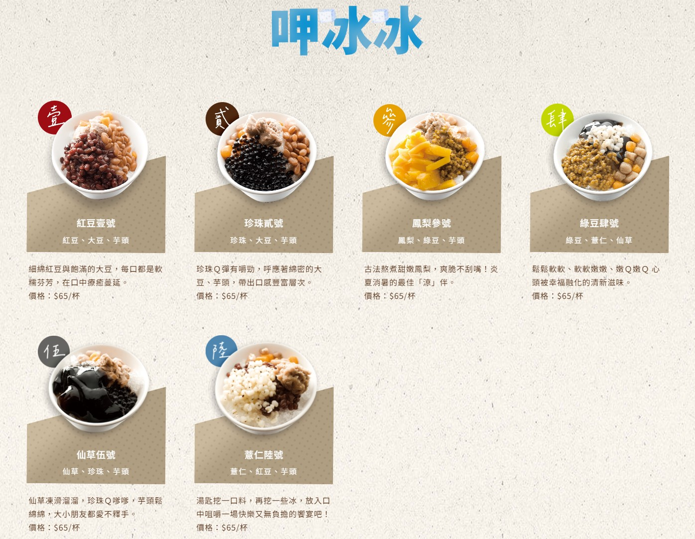
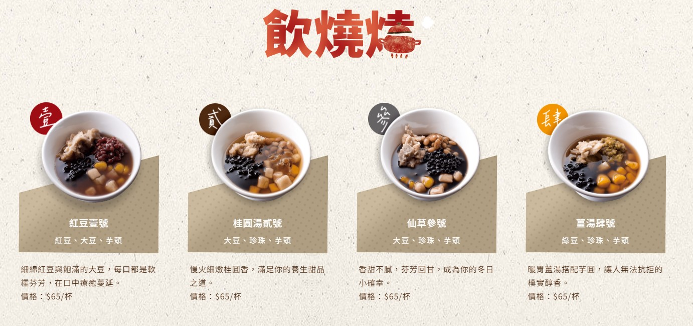
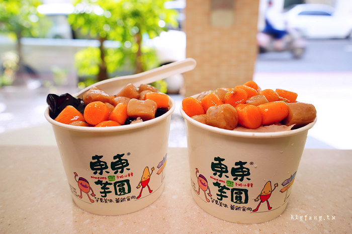
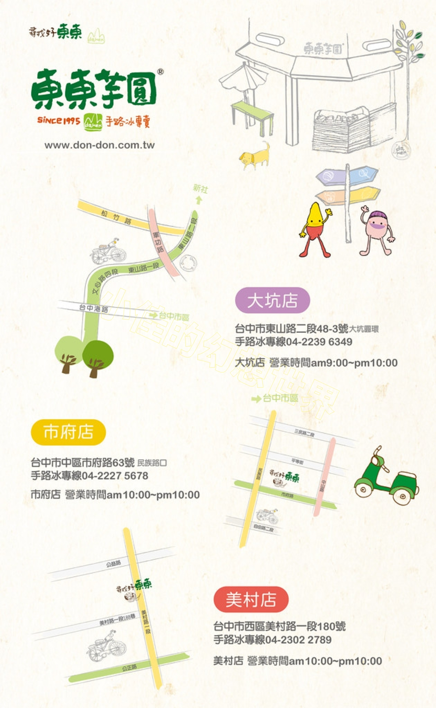

地址:台中市北屯區東山路二段48之3號*本店備有專屬停車場*
連絡電話:04-2239-6349
營業時間:09:00-22:00

台中「東東芋圓」可以說是芋圓界的扛霸子，絕對是許多人去台中大坑時必吃的美食之一，尤其那超Q彈有咬勁的芋圓、蕃薯圓，搭配紅豆、大豆、薏仁、珍珠、仙草，餡料幾乎滿出來，入口可是超滿足啊，而且夏天吃冰的，冬天吃熱的，生意都超好的啦。

冬天如果怕冷也有熱的口味可以選擇歐!


